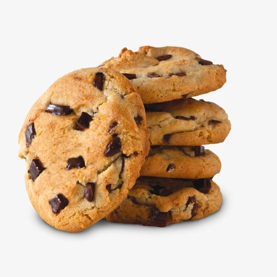
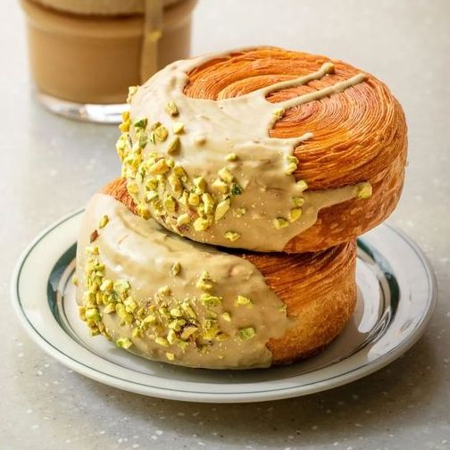

| Меню булочной «Брецель» | ||
|---|---|---|
| Название | Пример сервировки | Описание |
| Крамбл кукис |  | Печенье с добавлением фундука и бельгийского шоколада. Украшено хрустящей трубочкой, заполненной шоколадной пастой Nutella. Печенье на основе песочного теста с добавлением молочного бельгийского шоколада и М&М с орехами. |
| Круглый круассан |  | Круг из слоёного теста с большим количеством крема или конфитюра внутри. Очень популярный продукт французской кухни, подаётся на завтрак к кофе для взрослых или к какао («горячему шоколаду» по-французски) для детей; своеобразный символ этой страны. Круассаны бывают как без начинки, так и с самыми различными наполнителями — ветчина с сыром, сыр фета, различные кремы, персипан (подобие марципана из абрикосовой косточки), джемы. |
| Синнабоны | Мягкие и ароматные витые булочки с корицей, покрытые липкой сахарной глазурью. Нашу корицу тщательно готовят с помощью специального процесса помола при определенной температуре, это позволяет сохранить драгоценные эфирные масла и усилить сладкий аромат и вкус. | |
| Чизкейк | Десерт, состоящий из густой кремообразной начинки из сыра, яиц и сахара на тонком тесте, украшенный сладкими или иногда солеными ингредиентами. Нежнейшая песочная основа этого всеми любимого лакомства приготовлена на натуральном сливочном масле, а воздушный крем из сливочно-творожного сыра и натуральных сливок. | |
| Сочники с творогом | Выпечка в виде сложенной пополам лепёшки с полуоткрытой или закрытой начинкой. Песочное тесто тает во рту, оставляя приятное наслаждение сласти, а благодаря добавлению дрожжей сочник выходит из печки пышным, душистым и дышащим. Начинка из сладкого творога имеет мягкий, сливочно-молочный вкус, оставаясь на губах липким удовольствием. | |